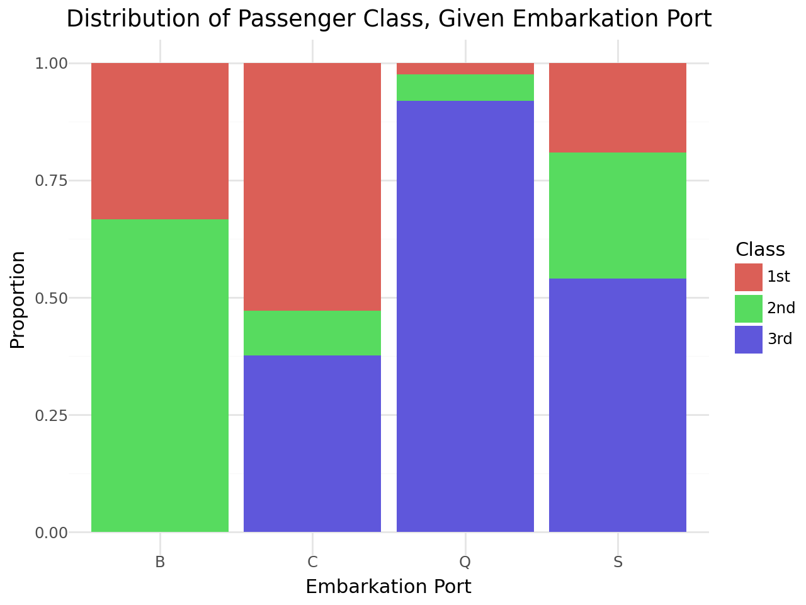

import numpy as np
import pandas as pdTitanic Wrangling
In this practice activity you’ll continue to work with the titanic dataset in ways that flex what you’ve learned about both data wrangling and data visualization.
Import the titanic dataset here
data_dir = "https://dlsun.github.io/pods/data/"
df_titanic = pd.read_csv(data_dir + "titanic.csv")1. Filter the data to include passengers only. Calculate the joint distribution (cross-tab) between a passenger’s class and where they embarked.
data_dir = "https://dlsun.github.io/pods/data/"
df_titanic = pd.read_csv(data_dir + "titanic.csv")
df_titanic.loc[
(df_titanic["class"] == "1st") |
(df_titanic["class"] == "2nd") |
(df_titanic["class"] == "3rd")
]| name | gender | age | class | embarked | country | ticketno | fare | survived | |
|---|---|---|---|---|---|---|---|---|---|
| 0 | Abbing, Mr. Anthony | male | 42.0 | 3rd | S | United States | 5547.0 | 7.1100 | 0 |
| 1 | Abbott, Mr. Eugene Joseph | male | 13.0 | 3rd | S | United States | 2673.0 | 20.0500 | 0 |
| 2 | Abbott, Mr. Rossmore Edward | male | 16.0 | 3rd | S | United States | 2673.0 | 20.0500 | 0 |
| 3 | Abbott, Mrs. Rhoda Mary 'Rosa' | female | 39.0 | 3rd | S | England | 2673.0 | 20.0500 | 1 |
| 4 | Abelseth, Miss. Karen Marie | female | 16.0 | 3rd | S | Norway | 348125.0 | 7.1300 | 1 |
| ... | ... | ... | ... | ... | ... | ... | ... | ... | ... |
| 1314 | Yvois, Miss. Henriette | female | 24.0 | 2nd | S | France | 248747.0 | 13.0000 | 0 |
| 1315 | Zakarian, Mr. Mapriededer | male | 22.0 | 3rd | C | Turkey | 2656.0 | 7.0406 | 0 |
| 1316 | Zakarian, Mr. Ortin | male | 27.0 | 3rd | C | Turkey | 2670.0 | 7.0406 | 0 |
| 1317 | Zenni, Mr. Philip | male | 25.0 | 3rd | C | Lebanon | 2620.0 | 7.0406 | 1 |
| 1318 | Zimmermann, Mr. Leo | male | 29.0 | 3rd | S | Germany | 315082.0 | 7.1706 | 0 |
1317 rows × 9 columns
joint_dist = pd.crosstab(df_passengers["class"], df_passengers["embarked"])
print(joint_dist)
embarked B C Q S
class
1st 3 143 3 175
2nd 6 26 7 245
3rd 0 102 113 494- Using the joint distribution that calculated above, calculate the following:
● the conditional distribution of their class given where they embarked
class_given_embarked = pd.crosstab(df_passengers["class"], df_passengers["embarked"],normalize="columns")
print(class_given_embarked)embarked B C Q S
class
1st 0.333333 0.527675 0.024390 0.191466
2nd 0.666667 0.095941 0.056911 0.268053
3rd 0.000000 0.376384 0.918699 0.540481● the conditional distribution of where they embarked given their class
pd.crosstab(df_passengers["embarked"], df_passengers["class"],normalize="columns")| class | 1st | 2nd | 3rd |
|---|---|---|---|
| embarked | |||
| B | 0.009259 | 0.021127 | 0.000000 |
| C | 0.441358 | 0.091549 | 0.143865 |
| Q | 0.009259 | 0.024648 | 0.159379 |
| S | 0.540123 | 0.862676 | 0.696756 |
Use the conditional distributions that you calculate to answer the following quesitons:
● What proportion of 3rd class passengers embarked at Southampton?
Third_Southampton = 494 / (102 + 113 + 494)
print(Third_Southampton)0.6967559943582511● What proportion of Southampton passengers were in 3rd class?
Southampton_third = 494 / (175 + 245 + 494)
print(Southampton_third)
0.54048140043763683. Make a visualization showing the distribution of a passenger’s class, given where they embarked.
Discuss the pros and cons of using this visualization versus the distributions you calculated before, to answer the previous questions.
from plotnine import ggplot, aes, geom_bar, labs, theme_minimal
class_given_embarked = pd.crosstab(df_passengers["class"], df_passengers["embarked"],normalize="columns")
class_given_embarked = class_given_embarked.reset_index().melt(
id_vars="class",
var_name="embarked",
value_name="proportion"
)
(
ggplot(class_given_embarked, aes(x="embarked", y= "proportion" , fill="class"))
+ geom_bar(stat="identity", position="stack")
+ labs(
title="Distribution of Passenger Class, Given Embarkation Port",
x="Embarkation Port",
y="Proportion",
fill="Class"
)
+ theme_minimal()
)